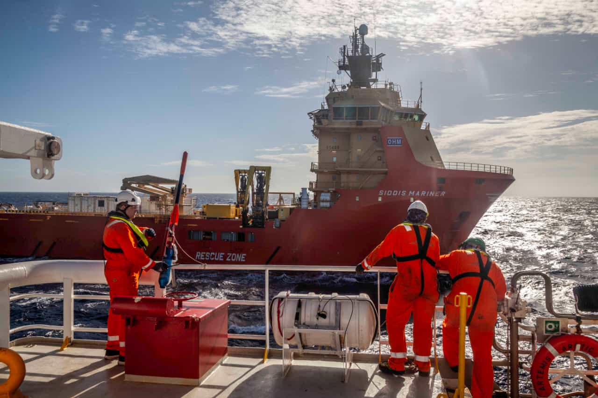

HOME
ABOUT US
CONTACT US

Increase Your Confidence And Reduce Uncertainty With Improve Data Quality
READ MORE


DEEP WATER SEISMIC DATA ACQUISITION
Save time and money with our high quality deep
water data acquistion and processing services